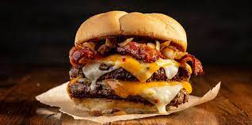

Cheesburger recipe!

Description
This burger will spark fireworks of its own at your next cookout with all of the savory flavors we've managed to put together in one recipe. Two Angus beef patties are stacked with Sargento® Sliced Sharp Cheddar Cheese and Sargento® Sliced Pepper Jack Cheese along with sautéed bacon, onion and two more varieties of cheese to complete this amazing creation.
Ingredients
- 10 oz. certified Angus ground beef
- 2 slices thick bacon
- 2 oz. Vidalia onion, diced
- ½ tsp. butter
- 1 fresh country butter roll
- 2 slices of cheddar cheese
Method
- Shape beef into two patties. Season with salt and pepper as desired. Cook to desired doneness on grill.
- Meanwhile, cook bacon and sauté onion in butter (approximately one to two minutes) on flat grill or sauté pan.
- Put pattie on bottom half of bun. Place Cheddar Cheese on pattie. Top with bacon and second pattie.
- Top with remaining bacon and onions and top of bun.
Return to homepage